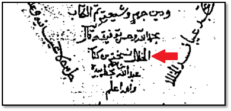
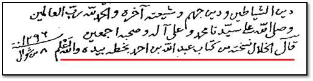
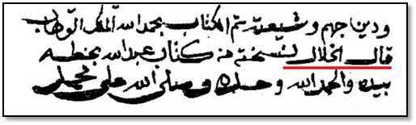
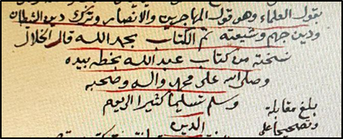
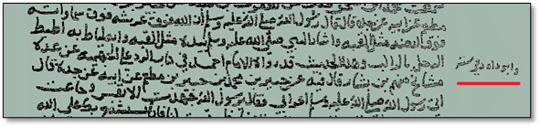

أسمارُ "النَّقْدِ التَّاريخيِّ" ... وزخارِفُ "البَحثِ العِلْميِّ"
قِراءةٌ نَقْديَّةٌ لمقالةِ الأسْتاذِ عَبْدِ اللهِ الغِزِّيِّ
عن صِفةِ الكَلامِ للباري سُبْحانَه.
(الحلْقةُ الرَّابِعةُ)
رسالةُ (الرَّدُّ على الزَّنادِقةِ)، ومغالَطةُ قنَّاصِ تِكْساس!
الشَّيخُ الدُّكتور بَنْدر بن عبدالله الشُّويقيُّ
توطئةٌ:
بعد قِراءةِ هذه الحَلْقةِ والتي تليها ربَّما يُدركُ القارئُ -كما أدركَ الكاتبُ- حاجتَه للكثيرِ من التَّأنِّي والحَذَرِ في قَبولِ المعلوماتِ والمقدِّماتِ التي يسوقُها الأستاذُ عبدُ اللهِ الغِزِّيُّ إذا أرادَ التَّمهيدَ لهدَفِه الذي يريدُ الوصولَ إليه؛ فالأستاذُ ليس بالضَّرورةِ أن يبنيَ النَّتائجَ على مُقدِّماتٍ صحيحةٍ، بل قد يعكِسُ المسارَ، فيُعطي القارئَ مُقدِّماتٍ غيرَ مُحرَّرةٍ، غرضُها الوصولُ إلى نتيجةٍ مُستهدَفةٍ، على خِلافِ ما يُنتظَرُ ممَّن يرفعُ شعارَ أصولِ البحثِ العلميِّ وقواعدِ النَّقدِ التَّاريخيِّ.
فوَزنُ المعلومةِ عند الأستاذِ كثيرًا ما يرتبطُ بمقدارِ خِدمتِها للنَّتيجةِ المطلوبةِ؛ فربَّما تراه يطيرُ بالمعلومةِ الخادمةِ حتى لو كانت خطأً أو وهمًا أو رأيًا واهيًا، وبالمقابلِ قد تعترضُ طريقَ الأستاذِ معلومةٌ أخرى صحيحةٌ ثابتةٌ لا تخدُمُ الهدفَ، فتراه يَجهَدُ في نفيِها أو التَّشكيكِ فيها، وربَّما تجاهَلَها كليًّا ولم يُشِرْ إليها أدنى إشارةٍ.
أسوأُ من هذا كُلِّه أنَّ الأستاذَ قد يُركِّبُ معلومةً من وهمِه لا أساسَ لها، ثمَّ يوظِّفُها في خدمةِ مَذهبيَّته، وأجِندتِه، ورساليَّتِه. (وأنا هنا مجرَّدُ مُستعيرٍ لبعضِ ألفاظِ الأستاذِ وتعابيرِه).
وفيما يأتي نماذِجُ وأمثلةٌ لذلك كُلِّه:
* * * *
ممَّا تعرَّضَ له الأستاذُ في مقالتِه: رسالةُ (الرَّدُّ على الزَّنادِقةِ والجَهميَّةِ) للإمامِ أحمدَ بنِ حنبلٍ -رحمه اللهُ-؛ فالأستاذُ طعن في نسبتِها للإمامِ، ورَكِبَ في سبيلِ ذلك الصَّعبَ والذَّلولَ، ولو أنَّه اقتصر فقط على دعوى أنَّ أسلوبَ الرِّسالةِ غيرُ معهودٍ عن الإمامِ أحمدَ، لكانَ هذا ممَّا يمكنُ تمشيتُه، فليس ذاك ممَّا يستحِقُّ أن يُنصَبَ الخِلافُ والخُصومةُ عليه.
غيرَ أنَّ النَّاظِرَ فيما سوَّده الأستاذُ -إن كان ممَّن يتفحَّصُ الكلامَ ويستوثِقُ ممَّا يقرأُ- سيظهرُ له أنَّ الأستاذَ أسندَ فِكرتَه بأكوامٍ من التَّلفيقِ والكلامِ غيرِ المحرَّرِ؛ لأجلِ ذلك فأنا هنا لن أنازعَ الأستاذَ في إثباتِ الرِّسالةِ أو نفيِها، وإنَّما سأناقشُ فقط "إجراءاتِه البحثيَّةَ" التي استعملها في النَّفيِ؛ لنُلقيَ بذلك المزيدَ من الضَّوءِ على نهجِ الأستاذِ، ولنعرِفَ إن كان -في هذه القضيَّةِ- مشى على قواعِدِ وأصولِ النَّقدِ التَّاريخيِّ، أو أنَّه أيضًا واصَل وأمعَن في رَسمِ الزَّخارفِ والأسمارِ.
عُلماءُ كلِّ مَذهبٍ أدرى بمذهبِ إمامِهم ... لكِنْ:
رسالةُ (الرَّدُّ على الزَّنادِقةِ والجَهميَّةِ) للإمامِ أحمدَ رسالةٌ مشهورةٌ مُتداوَلةٌ بين الحنابلةِ طيلةَ تاريخِهم، لا يختلفونَ في نِسبتِها لإمامِهم، فكما قال ابنُ القيِّمِ: "لم يُسمَعْ من أحدٍ من مُتقدِّمي أصحابِه ولا مُتأخِّريهم طَعنٌ فيه"(1).
والأستاذُ عبدُ اللهِ الغِزِّيُّ نفسُه يُقِرُّ أنَّ نصَّ الرِّسالةِ "مُتلقًّى بالقَبولِ بين فُقهاءِ المذهبِ الحَنبليِّ، والنَّقدُ الموجَّهُ إلى نِسبتِه كان من غيرِ عُلماءِ المذهبِ"(2).
لنجمَعَ هذا الكلامَ مع كلامٍ آخَرَ ذكره الأستاذُ وهو يتحدَّثُ عمَّا ينسُبُه الأشعريَّةُ لإمامِهم أبي الحسَنِ الأشعريِّ؛ فقد كان الأستاذُ هناك يؤكِّدُ أنَّ عُلماءَ كلِّ مَذهبٍ أدرى بمذهبِ إمامِهم(3)، إلَّا أنَّه لمَّا جاء للإمامِ أحمدَ، وأرادَ نفيَ تلك الرِّسالةِ عنه؛ أجرى تعديلًا طارئًا على قواعدِ البحثِ العِلميِّ وأصولِ النَّقدِ التَّاريخيِّ، فقال: "إجماعُ الحنابلةِ على نسبةِ هذا النَّصِّ للإمامِ ليس إجماعًا شرعيًّا مُلزِمًا"(4)، وقال: "على وجودِ هذا الاتِّفاقِ الحَنبليِّ على نسبةِ النَّصِّ للإمامِ، إضافةً إلى ذِكرِ اسمِه في كافَّة طُرَرِ النُّسخِ الخطِّيَّةِ للنَّصِّ التي وصلت إلينا، إلَّا أنَّ هذا لا يكفي بمُجرَّدِه في تصحيحِ النِّسبةِ؛ إذ إنَّ هناك اعتباراتٍ أخرى يجبُ ملاحظتُها عند دراسةِ النُّصوصِ التُّراثيَّةِ، مِثلُ: طبيعةِ لُغةِ الكتابِ، ومدى انسجامِه التَّاريخيِّ والمنهجيِّ لنِسبتِه لمن يُنسَبُ له"(5).
قال الأستاذُ هذا، ثمَّ أطال في ذِكرِ ما ظنَّه شواهِدَ تُثبتُ أنَّ لغةَ الرِّسالةِ ومحتواها لا يقبلانِ نِسبتَها للإمامِ، لكنَّه لم يعالجْ ولم يطرَحْ على نفسِه التَّساؤُلَ المنهجيَّ البَدَهيَّ عن تفسيرِ غفلةِ عُلماءِ الحنابلةِ على امتدادِ التاريخِ عن تنافُرِ هذه الرِّسالةِ وعدمِ انسجامِها مع لغةِ إمامِهم ونَهجِه!
الأستاذُ لم يطرحْ هذا التَّساؤلَ، ربَّما لأنَّ قاعدةَ: (عُلماءُ كلِّ مَذهبٍ أدرى بمذهبِ إمامِهم) تُستعمَلُ فقط مع الأشعريَّةِ والمُعتزلةِ، مِثلُها في ذلك مِثلُ قاعدةِ: (تحريمِ أخذِ المذاهِبِ من المصادِرِ الثَّانويةِ ومن كُتُبِ الخُصومِ)!
توثُّقُ الأستاذِ من النُّسَخِ الخطِّيَّةِ:
الأستاذُ في نقدِه للمُحقِّقِ أحمد الغريب أوجز الكلامَ عن نسبةِ الرِّسالةِ للإمامِ، ثمَّ أفرد لذلك بحثًا مُستقلًّا بعُنوانِ: (قراءةٌ في نصِّ رسالةِ الرَّدِّ على الزَّنادقةِ والجَهميَّةِ)، وقد نبَّه بأوَّلِه على أنَّ دراسةَ الأصولِ الخطِّيَّةِ عملٌ (بالغُ الأهميَّةِ!) يُفترَضُ أن يَسبِقَ النَّظرَ في محتوى الرِّسالةِ ولُغتِها. قال الأستاذُ: "يجبُ ألَّا نَغفُلَ عن دراسةِ النُّسخِ الخطِّيَّةِ للكتابِ وإن تعذَّر الوقوفُ عليها كلِّها بسببِ كثرتِها وتفرُّقِها في مَكتباتِ العالَمِ، لكن لا بُدَّ أن يبذُلَ الباحِثُ جُهدَه في تفحُّصِ أكبرِ قَدرٍ مُمكِنٍ منها".
وقال أيضًا: "نقدُ النُّصوصِ بمقابَلةِ ما وصل إلينا من نُسَخِها الخطِّيَّةِ عمليَّةٌ بالغةُ الأهميَّةِ، ولا بُدَّ أن تتقدَّمَ على دراسةِ طبيعةِ هذه النُّصوصِ ولُغتِها وظَرفِها"(6).
هذا ما قاله الأستاذُ ونصح به، فهل كان هذا تنظيرًا عِلميًّا صادقًا التزمه الأستاذُ قبل أن ينفيَ الرِّسالةَ عن الإمامِ، أو أنَّه مجرَّدُ حَشوٍ وتكثيرٍ للزَّخارفِ والأسمارِ؟
سنعرفُ جوابَ هذا إذا علِمْنا أنَّ الأستاذَ في بحثِه قفَز فوقَ تلك العمليَّةِ (البالِغةِ الأهميَّةِ!) وتجاوزَها، واعتمد عِوَضًا عن ذلك على دراسةٍ ركيكةٍ كتبها طالبُ دكتوراه أمريكيٌّ مُبتدئٌ في عالَمِ الاستِشراقِ(7)، فجاء الأستاذُ (الحنبليُّ!) واعتمدَ على تلك الدِّراسةِ في معرفةِ حالِ مخطوطاتِ الرِّسالةِ، ثمَّ كتبَ ذيلًا عليها في مئةِ صفحةٍ ذهبَت كلُّها في الحديثِ المُسهَبِ عن لُغةِ الرِّسالةِ ومحتواها، ثمَّ انتهى إلى عدمِ مُناسبةِ نِسبتِها للإمامِ أحمدَ، فعلَ الأستاذُ هذا دون أن يتكلَّفَ النَّظرَ في نُسخِ الرِّسالةِ الخطِّيَّةِ المُتوافِرةِ والقريبةِ منه، وسنرى فيما يأتي نتيجةَ هذا المَسلكِ.
* * * *
رسالةُ (الرَّدُّ على الزَّنادقةِ والجَهميَّةِ) كما أسلفْتُ كانت -ولم تزَلْ- مشهورةً مُتداوَلةً بين الحنابلةِ. وكان من أكبرِ العقَباتِ التي واجهَت الأستاذَ وهو يسعى لنفيِها عن الإمامِ: أنَّ أبا بكرٍ الخلَّالَ (مخزَنَ عُلومِ الإمامِ) روى الرِّسالةَ بأكملِها في كتابِه (السُّنَّة) الذي يُعَدُّ أشهرَ وأوسعَ مَصدرٍ لنصوصِ الإمامِ أحمدَ العَقَديَّةِ، غيرَ أنَّ أكثرَ كتابِ الخَلَّالِ -كما هو معلومٌ- مفقودٌ اليومَ، ولم يصِلْنا منه إلَّا قَدرُ الثُّلُثِ(8)، لكن بما أنَّ الكتابَ كان متاحًا بأكملِه بين يدَيْ عُلماءِ الحنابلةِ وغيرِهم، فقد عرَفْنا كثيرًا من مضامينِه من خلالِ نَقلِهم عنه، وممَّا عرَفْناهُ من نصوصِ العُلماءِ أنَّ رسالةَ الإمامِ أحمدَ مَرويَّةٌ في الكتابِ بأكملِها.
قال شيخُ الإسلامِ ابنُ تيميَّةَ: "ذكَر هذا الكتابَ أبو بكرٍ الخَلَّالُ في كتابِ (السُّنَّة) ونقَلَه بألفاظِه"(9)، وكرَّر هذا في أكثَرَ من موضعٍ من مؤلَّفاتِه(10). وقال الذَّهبيُّ: "أخرجه كلَّه أبو بكرٍ الخَلَّالُ في (السُّنَّة)" (11). وقال ابنُ القيِّمِ: "ذكَره الخَلَّالُ في الجامِع"(12). وقال ابنُ مُفلِحٍ: "هذا الكتابُ رواه ابنُه عبدُ اللهِ، وذكَره الخَلَّالُ في كتابِه"(13).
ومن أهمِّ النُّصوصِ التي وثَّقت الرِّسالةَ ما نقله ابنُ القيِّمِ أنَّ الخَلَّالَ لمَّا روى الرِّسالةَ كلَّها في كتابِه قال: "كتبْتُ هذا الكتابَ من خَطِّ عبدِ اللهِ، وكتَبَه عبدُ اللهِ من خَطِّ أبيه"(14).
هذا النَّصُّ النَّفيسُ في توثيقِ الرِّسالةِ كان يَعوقُ طريقَ الأستاذِ وهو يسعى لنفيِها عن الإمامِ، لذلك رأيناه تحيَّر في كيفيَّةِ الخلاصِ منه، فقال بمرارةٍ: "يجبُ أن نعترفَ -مبدئيًّا- أنَّنا سنكونُ أمامَ مُعضِلةٍ حقيقيَّةٍ إذا ثبت أنَّ الخَلَّالَ -جامِعَ علومِ الإمامِ- روى النَّصَّ في كتابِه السُّنةِ وِجادةً عن نُسخةٍ بخطِّ عبدِ اللهِ...". "نحن أمامَ مُعضِلةٍ حقيقيَّةٍ إذا ثبتت صِحَّةُ هذه الإحالةِ الصَّريحةِ التي ذكَرها شمسُ الدِّينِ بنُ القيِّمِ"(15). "لا شكَّ أنَّ الأمرَ سيزدادُ تعقيدًا إن ثبت أنَّ الخَلَّالَ هو الذي يروي النَّصَّ عن عبدِ اللهِ وِجادةً، كما يذكُرُ ذلك شمسُ الدِّينِ بنُ القيِّمِ بعبارةٍ صريحةٍ"(16).
فكما نرى: عبارةُ ابنِ القيِّمِ التي يُفترَضُ أن تكونَ وثيقةً ذاتَ وزنٍ في إثباتِ النِّسبةِ للإمامِ، جعلها الأستاذُ "مُعضِلةً حقيقيَّةً"؛ لأنَّها تعترضُ الطَّريقَ إلى الهدَفِ المنشودِ!
ولمَّا أرادَ الأستاذُ الخروجَ من مُعضلتِه أخذَ في التَّشكيكِ في نقلِ ابنِ القيِّمِ بمنهجيَّةٍ غيرِ عِلميَّةٍ، فكان ممَّا قاله: "إذا كان الخَلَّالُ كتب هذا النَّصَّ من نسخةٍ بخَطِّ عبدِ اللهِ -كما يذكُرُ شمسُ الدِّينِ بنُ القيِّمِ- لماذا لم تَرِدْ هذه العبارةُ في نقلِ ابنِ أبي يَعْلَى؟ ولماذا لم تَرِدْ كذلك في إسنادِ النَّصِّ، ولا في خاتمتِه أيضًا في نُسَخِهِ الخطِّيَّة؟"(17).
وهذا السُّؤالُ سُؤالُ مُغالطةٍ وتشغيبٍ وليس سؤالًا عِلميًّا؛ لسببينِ اثنينِ:
الأوَّلُ: أنَّ الذي يقرأُ كلامَ الأستاذِ يظُنُّ أنَّ ابنَ أبي يَعْلَى ساق نصَّ الرِّسالةِ كاملًا، أو على الأقلِّ نقَل قدْرًا واسعًا منها؛ فلذلك صار نقلُه سببًا للتَّشكيكِ في نقلِ ابنِ القيِّمِ، والواقِعُ على خلافِ ذلك، فابنُ أبي يَعْلَى ساق سندَه إلى عبدِ اللهِ بنِ الإمامِ أحمدَ، ثمَّ نقل نصًّا قصيرًا منها لا يبلُغُ الصَّفحةَ الواحدةَ، ثمَّ قال بآخِرِه: "وذكَر (عبدُ اللهِ) الرِّسالةَ بطولِها"(18). فكما هو ظاهِرٌ، نقلُ ابنِ أبي يَعْلَى مُختصَرٌ غايةَ الاختصارِ، فما وَجهُ الغرابةِ في خُلُوِّه عمَّا ذكَره ابنُ القيِّمِ؟!
الأمرُ الثَّاني -وهو الأهَمُّ-:
أنَّ ما نفاه الأستاذُ عن النُّسَخِ الخَطيَّةِ موجودٌ مُثبَتٌ فيها! لكنْ لأنَّ طالِبَ الدُّكتوراه الأميركيَّ المبتدئَ أغفلَ ذلك، فقد جاء الأستاذُ ومشى وراءه بتسليمٍ وتفويضٍ!
الأستاذُ يتساءلُ ويقولُ: "لماذا لم تَرِدْ (عبارةُ الخَلَّالِ) في إسنادِ النَّصِّ، ولا في خاتمتِه في نُسَخِه الخطِّيَّة". والواقعُ أنَّ من ينظُرُ في نُسخِ الرِّسالةِ الشَّائعةِ يجِدُ في خاتمةِ عدَدٍ منها هذه العبارةَ:
"قال الخَلَّالُ: نسَخْتُه من كتابِ عبدِ اللهِ بنِ أحمدَ بخَطِّه بيدِه"!
فهذا ما نفاه الأستاذُ بعدما أغفل العمليَّةَ (البالغةَ الأهميَّةِ). وحتَّى لا أتعِبَه فيما ليس من شأنِه، سأضعُ له هنا صورًا لما جاء في خاتمةِ أربعٍ من نُسَخِ الرِّسالةِ القريبةِ التي لم أتعَبْ أبدًا في البحثِ عنها:




هذه أربعُ نُسخٍ اشتملَت على ما نفاه الباحثُ الأميَزُ.
وفي تقديري أنَّ هذه السَّقطةَ الكُبرى تَعيبُ أقلَّ الباحثينَ وتقدَحُ في أصغرِهم؛ فالإشكالُ هنا ليس في الغفلةِ عن ذلك النَّصِّ المثبَتِ في عددٍ من النُّسخِ الخطِّيَّةِ، بل في إطلاقِ نَفيٍ مَبنيٍّ على غيرِ شيءٍ، ثمَّ تحويلِ هذا النَّفيِ إلى دليلٍ وشاهدٍ!
وأوَدُّ التَّنبيهَ هنا إلى أنَّ الصُّورتينِ الأُولَيينِ موجودتانِ تحت أنفِ الأستاذِ ويدِه، ويستطيعُ الوقوفَ عليهما دون أن يغادرَ عتَبةَ دارِه!
فالأستاذُ كان يكتُبُ اعتراضاتِه على الرِّسالةِ من خلالِ طبعتِها المنشورةِ بتحقيقِ الدكتورِ دغش العجمي، والدكتورُ أثبتَ في مُقدِّمةِ تحقيقِه صُوَرًا لبعضِ نُسخِها الخطِّيَّةِ، فليراجِعِ الأستاذُ -إن لم يكنْ عليه في ذلك مشقَّةٌ- الصَّفحتينِ (156، 158)، وسيجِدُ عبارةَ الخَلَّالِ تضحَكُ عجَبًا ودهشةً من أسمارِ (أهلِ الاختصاصِ، المشارِ لهم بالتميُّزِ!)، الذين كانوا يؤكِّدونَ على ضرورةِ أن يبذُلَ الباحثُ جُهدَه في تفحُّصِ أكبرِ قَدرٍ مُمكنٍ من النُّسَخِ الخطِّيَّةِ، ويُنبِّهونَ إلى أنَّ هذه عمليَّةٌ بالغةُ الأهميَّةِ، لا بُدَّ أن تتقدَّمَ على دراسةِ طبيعةِ النَّصِّ ولُغتِه وظَرفِه!
الأستاذُ ... وقنَّاصُ تِكْساس!
يروي الأميركيُّونَ أنَّ القنَّاصةَ في تِكْساس كانوا يَرسُمونَ على الجدارِ دوائِرَ، ثمَّ يتنافسونَ في التَّصويبِ على قَلبِها ببنادِقِهم، وكان فيهم قنَّاصٌ قليلُ المهارةِ، لكنَّه مع ذلك لم يكنْ يخطِئُ أبدًا إصابةَ قَلبِ الدَّائرةِ، والسَّببُ ببساطةٍ أنَّه كان يصوِّبُ طلقتَه أوَّلًا على الجدارِ، ثم يذهَبُ ويرسُمُ الدَّوائِرَ حولَ مكانِ الطَّلقةِ في الجدارِ؛ ليَتيهَ بعدها فخرًا بمهارتِه ودِقَّةِ تصويبِه!
هذا القصَّةُ شُهِرَت باسمِ: "مُغالطة قنَّاصِ تِكْساس"، والغَرَضُ من ذِكرِها شرحُ واحدةٍ من المُغالطاتِ المنطقيَّةِ الشَّائعةِ، حين يُفصِّلُ المُستدِلُّ مُقدِّماتِه كي توصِلَه إلى النَّتيجةِ المُستهدَفَة؛ ليَظهرَ بعدها في صورةِ الباحثِ المنهجيِّ الذي بنى النَّتائجَ على مُقدِّماتٍ صادقةٍ.
الأستاذُ في مسعاه لنفيِ الرِّسالةِ استعار بعضَ مهاراتِ قنَّاصِ تِكْساس؛ فهو لمَّا رأى في الرِّسالةِ قِسمًا يُشبِهُ -ولا يُطابِقُ-كلامًا لمقاتِلِ بنِ سُليمانَ، أراد أن يُثبتَ أنَّ الرِّسالةَ لمقاتِلٍ وليست للإمامِ أحمدَ، فعاد بالزَّمنِ إلى الوراءِ، وبدأ برسمِ الدَّائرةِ على الجدارِ فقال: "إنَّ ما نميلُ إليه أنَّ القِسمَ الأوَّلَ (من الرِّسالة) لا ينتمي بأيِّ حالٍ للظَّرفِ الذي عاش فيه الإمامُ (أحمدُ)، وإنَّما كُتِب في مَرحلةٍ مختلِفةٍ، نُقَدِّرُ أنَّها في زمنِ المَهديِّ (158هـ-169هـ)، أو في أواخرِ زمنِ والِدِه المنصورِ (136هـ-158هـ)؛ إذ نَشِطَت في بداياتِ ظُهورِ الدَّولةِ العبَّاسيَّة حركةُ الزَّنادقةِ..."(19).
الأستاذُ هنا حدَّد حِقبةً زمنيَّةً لتأليفِ الرِّسالةِ فصَّلها لتُناسِبَ شخصيَّةَ مقاتِلِ بنِ سُليمانَ، المتوفَّى في حدودِ سنة (150هـ). أمَّا دليلُ الأستاذِ على دائرتِه التي رسمها فهو أنَّ الرِّسالةَ تضمَّنَت ردًّا على الزَّنادقةِ، وحركةُ الزَّنادقةِ -في رأيِ الأستاذِ- إنَّما نَشِطَت في تلك الحِقبةِ. فلكي يُحكِمَ "قنَّاصُ تِكْساس" تصويبَتَه، أكَّدَ أنَّ القِسمَ الأوَّلَ من الرِّسالةِ "مخصَّصٌ للرَّدِّ على طائفةٍ نَشِطَت في بداياتِ الدَّولةِ العبَّاسيَّةِ، ثمَّ ضَعُف أمرُها وتلاشى بعد ذلك"(20).
من يتأمَّلُ الدَّائرةَ التي رسمَها لنا قنَّاصُ تِكْساس سيفهَمُ أنَّ الزَّنادقةَ كانوا نَشِطينَ إلى أن تُوُفِّيَ مقاتِلُ بنُ سُليمانَ في حُدودِ سنةِ (150هـ)، ثمَّ أخذ نشاطُهم في الضَّعفِ والفَناءِ؛ لهذا فلا يمكِنُ أن يكتُبَ الإمامُ أحمدُ المُتوفَّى سنةَ (241هـ) رسالةً في الرَّدِّ على الزَّنادقةِ المُنقَرِضينَ، فالرِّسالةُ إذَن من تأليفِ مقاتِلِ بنِ سُليمانَ الذي عاش في حِقبةِ نشاطِ الزَّنادقةِ.
وبهذا أصابت طلقةُ القنَّاصِ هدَفَها، بل أصاب الهدَفُ قلبَ الطَّلقةِ!
لا أدري ما "الإجراءاتُ البحثيَّةُ" التي سلكها الأستاذُ قبل أن يَحكُمَ بضَعفِ وفَناءِ نشاطِ الزَّنادقةِ زمَنَ الإمامِ أحمدَ، غيرَ أنِّي ألتمِسُ منه أن يذهَبَ إلى كتابِ (تأويل مُشكِل القُرآنِ)، الذي صنَّفه ابنُ قُتَيبةَ (276هـ) المعاصِرُ للإمامِ أحمدَ، وسيجِدُ مُؤلِّفَه يشرحُ سببَ تأليفِ كتابِه، ويقولُ: "قد اعترض كتابَ اللهِ بالطَّعنِ مُلحِدون ولَغَوا فيه وهَجروا، واتَّبَعوا ما تشابهَ منه ابتغاءَ الفتنةِ وابتغاءَ تأويلِه، بأفهامٍ كليلةٍ، وأبصارٍ عليلةٍ، ونظَرٍ مدخولٍ؛ فحرَّفوا الكلامَ عن مواضِعِه، وعَدَلوه عن سُبُلِه، ثمَّ قضَوا عليه بالتَّناقُضِ، والاستحالةِ، واللَّحْنِ، وفسادِ النَّظْمِ، والاختِلافِ"(21).
ولو بحث الأستاذُ في المسائلِ المرويَّةِ عن الإمامِ أحمدَ فسيجِدُ له كلامًا كثيرًا وأجوبةً عن أسئلةٍ كانت تُوجَّهُ إليه عن حُكمِ الزَّنادقةِ، بل سيجِدُ في كتابِ (أحكام أهلِ المِلَلِ) للخَلَّالِ بابًا كاملًا، عُنوانُه: (بابُ أحكامِ الزَّنادقةِ) فيه رواياتٌ عن الإمامِ في حُكمِهم؛ منها مثلًا قولُه: "الزَّنادِقةُ حُكمُهم القَتلُ، ليست لهم توبةٌ؛ لأنَّهم وُلِدوا على الفِطرةِ ونزَعوا إلى خِلافِها، ولا أرى لهم إلَّا السَّيفَ إذا لم يرجِعوا"(22).
ولو نظر الأستاذُ في بعضِ المراجِعِ التَّاريخيَّةِ فسيجِدُ الحالَ وصل عام (288هـ) إلى أن يكونَ الرجُلُ الثَّاني في الدَّولةِ، الوزيرُ الأوَّلُ للخليفتينِ المعتَضِدِ والمُكتَفي: القاسِمَ بنَ سُليمانَ الحارثيَّ، الذي يقولُ عنه ابنُ النَّجَّارِ: "كان جوادًا مُمدَّحًا، إلَّا أنَّه كان زِنْديقًا"(23).
ولعلَّ الأستاذَ يتأمَّلُ في أنَّ النِّصفَ الثَّانيَ من القَرنِ الثَّالثِ الذي عاش فيه الإمامُ أحمدُ، هو زمنُ ابنِ الرَّاوَنديِّ "مُعتمَدِ الملاحَدةِ والزَّنادقةِ"، كما يصِفُه ابنُ الجَوزيِّ(24). وسبَبُ زندقتِه كما يقولُ التَّنوخيُّ: أنَّه "كان يجالِسُ الزَّنادقةَ وأهلَ الإلحادِ، فإذا عُوتِبَ قال: إنَّما أريدُ أن أعرِفَ مَذاهبَهم، ثمَّ كاشف وناظر على الإلحادِ، وصنَّف في الزَّندقةِ كتُبًا كثيرةً"(25). فالزَّنادقةُ -كما يرى الأستاذُ- لم تَفْنَ حركتُهم، بل لم تَزَلْ لهم مجالِسُهم وكتُبُهم.
وممَّا صنَّفه ابنُ الرَّاوَنديِّ كتابُ (الدَّامِغ) الذي كتبه ليَدمَغَ به القُرآنَ بزَعمِه، وكتابُ (الزُّمُرُّد) الذي كتبه في الطَّعنِ على الأنبياءِ، وقد ردَّ عليه من المُعتَزِلةِ كلٌّ من أبي الحُسينِ الخَيَّاطِ، وأبي عَليٍّ الجُبَّائيِّ، وكِلاهما ممَّن أدرك زمَنَ الإمامِ أحمدَ(26).
فها هي الزَّندقةُ لا تزالُ نَشِطةً، ولا تزالُ كُتُبها تُصنَّفُ، ولا تزالُ شُبهاتُ أصحابِها تُقابَلُ بالرَّدِّ والنَّقضِ، كلُّ هذا في الحِقبةِ التي زعم الأستاذُ أنَّ الزَّندقةَ فيها ضَعُفتْ ثمَّ فَنِيَت!
وممَّا ذكَره ابنُ الجَوزيِّ في حوادثِ سنةِ (311هـ) أنَّه: "في نِصفِ رَمضانَ أُحرِقَ على بابِ العامَّةِ (ببغدادَ عاصِمةِ الخِلافةِ) صورةُ ماني وأربعةُ أعدالٍ مِن كُتُبِ الزَّنادقةِ"، وكانت هذه الكُتُبُ مُحلَّاةً بالذَّهبِ والفِضَّةِ(27). وكان الجاحِظُ -المعاصِرُ للإمامِ أحمدَ- يتحدَّثُ قبل ذلك عن مُغالاةِ الزَّنادقةِ في تحصيلِ كُتُبِ الزَّندقةِ وإنفاقِ المالِ عليها(28).
وسيبقى الحالُ على هذا ليأتيَ أبو بكرٍ الباقِلَّانيُّ (403هـ) ويضَعُ كتابَه (الانتصارُ للقُرآنِ)، ويذكُرَ بأوَّلِه أنَّ سببَ تأليفِه أنَّ هناك من طلب منه: "إبطالَ ما يدَّعيه أهلُ الضَّلالِ من تحريفِه وتغييرِه ودخولِ الخَلَلِ فيه، وذَهابِ شيءٍ كثيرٍ منه، وزيادةِ أمورٍ فيه، وما يدَّعيه أهلُ الإلحادِ وشيعتُهم من مُنتَحِلي الإسلامِ من تناقُضِ كثيرٍ منه، وخُلُوِّ بعضِه من الفائدةِ، وكونِه غيرَ مُتناسِبٍ، وما ذكَروه من فسادِ النَّظْمِ، ودخولِ اللَّحنِ فيه، ورَكاكةِ التَّكرارِ، وقِلَّةِ البيانِ، وتأخُّرِ المُقَدَّمِ، وتقديمِ المُؤَخَّرِ..." (29).
فمع هذا السِّياقِ التَّاريخيِّ الواضِحِ الذي يَشرحُ اتِّصالَ حركةِ الزَّندقةِ: كيف حكمَ الأستاذُ بضَعفِ حركتِهم وفَنائِها، ثمَّ بنى على ذلك تعيينَ تاريخٍ قديمٍ لتأليفِ رسالةِ الرَّدِّ عليهم؟!
هناك الكثيرُ والكثيرُ من النُّصوصِ والشَّواهدِ التي يمكِنُ ذِكرُها لإثباتِ خطأِ ما ادَّعاه الأستاذُ من ضَعفِ وفَناءِ نشاطِ الزَّنادقةِ زمَنَ الإمامِ أحمدَ، لكنِّي سأكتفي بما ذكَرْتُه؛ ففي ظنِّي أنَّ فيه كفايةً إن كان لدى الأستاذِ استعدادٌ لإعادةِ رسمِ دائرتِه والتخلِّي عن زخارفِه وأسمارِه.
* * * *
خطأٌ في فهمِ أدواتِ النَّقدِ التَّاريخيِّ:
لمَّا أرادَ الأستاذُ تأكيدَ دعوى أنَّ الرِّسالةَ كُتِبت في تلك الحِقبةِ التي حدَّدها، وفي قلبِ الدَّائرةِ التي رسمَها، تعلَّق بشاهدٍ آخَرَ لا يقِلُّ غرابةً عن سابقِه.
قال الأستاذُ: "القِسمُ الثَّاني (من الرِّسالةِ) مُركَّزٌ في الرَّدِّ على الجَهمِ بنِ صَفوانَ تركيزًا ظاهرًا، مع مُلاحظةِ أنَّ جميعَ الشَّخصيَّاتِ التَّاريخيَّةِ المذكورةِ فيه تُوفِّيَت في القَرنِ الثَّاني، ولم يُشِرْ لأيٍّ من المتكَلِّمينَ الذين تُوفُّوا في القرنِ الثَّالثِ، وبعضُهم كان للإمامِ منهم مَوقِفٌ شديدٌ"(30).
والأستاذُ في كلامِه هذا يحاوِلُ توظيفَ أداةٍ نقديَّةٍ أساء فَهمَها؛ فتعيينُ نطاقٍ زمنيٍّ محصورٍ لتأليفِ كتابٍ ما من خلالِ الأسماءِ الواردةِ فيه، إنَّما يُفيدُ إذا كان المُؤلِّفُ يذكُرُ أسماءً ويُصرِّحُ بمعاصرتِه لها، كأن يذكُرَ أنَّه سمِع هذا، أو شاهد هذا، أو حضَر مجلِسَ ذاك، ونحوَ ذلك من العباراتِ. أمَّا مُجرَّدُ وُرودِ أسماءٍ داخِلَ الكتابِ فمن البداهةِ أنَّ هذا لا يفيدُ في تعيينِ تاريخٍ مُتقَدِّمٍ لتأليفِه(31)، وبخاصَّةٍ حين يكونُ الكلامُ عن رسالةٍ صغيرةٍ، لم يَرِدْ فيها أصلًا سوى بضعةِ أسماءٍ، كرسالةِ الإمامِ أحمدَ.
وإن أحبَّ الأستاذُ أعطيتُه نماذجَ لكتاباتٍ في القرنِ الخامسِ أو السَّادسِ مثلًا، وجميعُ الأسماءِ المذكورةِ فيها تعودُ إلى أشخاصٍ في القرنِ الثَّاني والثَّالثِ.
ولماذا نذهبُ بعيدًا؛ فالأستاذُ نفسُه من الممكِنِ أن يكتُبَ اليومَ كتابًا ويملؤُه باستشهاداتٍ عاليةٍ عن الصَّحابةِ والتَّابعينَ فقط، لكنَّ هذا الكتابَ بداهةً لن يجعَلَ مؤلِّفَه مُعاصِرًا للقُرونِ المُفضَّلةِ، وقد يكتُبُ الأستاذُ كتابًا عن غزوةِ بَدرٍ فيذكُرُ تفاصيلَها، ومَن شَهِدها، ومَن غاب عنها، لكنَّ هذا كلَّه لن يجعَلَ الأستاذَ ممَّن شَهِد الغزوةَ فغُفِر له!
عَودٌ إلى الزَّخارفِ والأسمارِ:
كان من جملةِ ما احتجَّ به الأستاذُ في نفيِ الرِّسالةِ عن الإمامِ أحمدَ: أنَّ الإمامَ أثناء المُناظرةِ كان يؤكِّدُ أنَّه ليس صاحِبَ كلامٍ!
وهذا الاحتجاجُ يعودُ بنا للمرَّةِ الألفِ إلى قصَّةِ الزَّخارفِ والأسمارِ، فالأستاذ قرَّر هذا بعدما حصر مدلولَ كلمةِ (مُتكَلِّم) في معنًى واحدٍ، هو: "من يخوضُ في الجدَلِ العَقليِّ، بغَضِّ النَّظَرِ عن مُعتَقَدِه"(32)، ثمَّ ركَّبَ الأستاذُ من ذلك دليلًا على نفيِ الرِّسالةِ عن الإمامِ، بناءً على اشتمالِها على حِجاجٍ عَقليٍّ!
وحتَّى يعلَمَ الأستاذُ سببَ تَكراري لقصَّةِ الزَّخارفِ والأسمارِ، سأعودُ به إلى كلامٍ ذكَره هو لمَّا كان مُندَفِعًا في نسبةِ القولِ بقِدَمِ القرآنِ للإمامِ أحمدَ، فقد كان من جملةِ ما احتجَّ به: "أنَّ الإمامَ كان يَقيسُ القرآنَ على العِلمِ". قال الأستاذُ: "وهذا كثيرٌ في نصوصِه". ثمَّ يضيفُ الأستاذُ: "ومِن أشهَرِ نُصوصِه التي يُفهَمُ منها اعتقادُه بأزَليَّةِ القرآنِ: ردُّه في مجلِسِ المُناظرةِ على استدلالِ عبدِ الرَّحمنِ بنِ إسحاقَ -قاضي أهـلِ الرَّأي- على خَلقِ القرآنِ: (بأنَّ اللهَ كان ولا قرآنَ) فيكونُ مخلوقًا، فأجاب الإمامُ: (كان ولا عِلْمَ؟!)، أيْ: مماثلـةُ حُكمِ القـرآنِ أو صفةِ الـكـلامِ لصفةِ العلمِ، فإن كان القرآنُ غيرَ أزَليٍّ -كما يعتقِدُ مُناظِروه- فكذلك حالُ العِلمِ"(33).
فأقولُ للأستاذِ: هذا الشَّيءُ الذي سمَّيتَه قياسًا، أليس حِجاجًا عقليًّا؟
وإن أحبَّ الأستاذُ المزيدَ من صُوَرِ الحِجاجِ بالعَقلِ الفِطريِّ الذي كان الإمامُ يستعمِلُه، فلينظُرْ فيما روى الخلَّالُ عن أحمدَ بنِ الحسَنِ التِّرمِذيِّ، قال: "سألتُ أحمدَ، فقُلتُ: يا أبا عبدِ اللهِ: قد وقع مِن أمرِ القرآنِ ما وقع، فإن سُئِلتُ عنه ماذا أقولُ؟ فقال لي: ألسْتَ مخلوقًا؟ قُلتُ: نعم. فقال: أليس كلُّ شيءٍ منك مخلوقًا؟ قُلتُ: نعم. قال: فكلامُك، أليس هو منك؟ قُلتُ: نعم. قال: فكلامُ اللهِ -عزَّ وجَلَّ- أليس هو منه؟ قُلتُ: نعم. قال: فيكونُ من اللهِ شيءٌ مخلوقٌ؟!"(34).
فهذا النَّوعُ من الحِجاجِ العَقليِّ لم يكُنِ الإمامُ يأباه لمَّا احتيجَ إليه، وهناك فرقٌ بين مُطلَقِ الحِجاجِ العَقليِّ، وبين الحِجاجِ على طريقةِ المتكَلِّمينَ التي تكثُرُ فيها الإجمالاتُ المُلبِسةُ، والاصطِلاحاتُ المُحْدَثةِ غيرُ المحَرَّرةِ. والأمرُ كما قال ابنُ الوزيرِ: "ليس مَن نهى عن عِلمِ الكلامِ، فقد نهى عن فِطَرِ العُقولِ"(35).
واحِدةٌ أخرى بعد المرَّةِ الألفِ:
نأتي بعد هذا إلى واحِدةٍ أخرى من زخارفِ الأستاذِ التي لا يبدو لها نهايةٌ.
فالأستاذُ بعدما قرَّر أنَّ مُصطلَحَ (مُتكَلِّم) عند الإمامِ أحمدَ يعني مَن يمارِسُ الحِجاجَ العقليَّ بقَطعِ النَّظرِ عن مذهبِه، أراد تأكيدَ هذا التَّفسيرَ، فقال: "يدُلُّ عليه ما حكاه أبو العبَّاسِ النَّاشئُ الأكبرُ -من مُتكَلِّمي المُعتزلةِ- عن وليد (=كذا! الحسين؟) الكرابيسيِّ من أنَّه يتعاطى الكلامَ ويصحَبُ المُتكَلِّميَن، ولم يمنَعْه هذا التَّعاطي للكلامِ أن يجعَلَه مع الحَشَويَّةِ وأصحابِ الحَديثِ"(36).
وبعيدًا عن الخللِ المنهجيِّ في تفسيرِ مُصطلَحِ الإمامِ أحمدَ بكلامِ رجلٍ مُعتزليٍّ، وبعيدًا عن فَهمِ الأستاذِ لكلامِ النَّاشئِ، سأتوقَّفُ هنا عند تلك العبارةِ التي وضعها الأستاذُ بين قوسينِ.
فعبارةُ أبي العبَّاسِ النَّاشئِ في المصدرِ الذي أحال عليه الأستاذُ تقولُ: "وقالت فِرقةٌ أخرى من حَشوِ البغداديِّينَ، يُعرَفون بالوليديَّة، هم أصحابُ وليد الكرابيسيِّ -وكان وليدٌ هذا يتعاطى الكلامَ ويصحَبُ المُتكَلِّمينَ-..."(37).
فأبو العبَّاسِ النَّاشئُ كان يتحدَّثُ عن رجلٍ: "يتعاطى الكلامَ، ويصحَبُ المُتكَلِّمينَ" اسمُه: (الوليدُ الكرابيسيُّ)، فتدخَّل الأستاذُ، وصحَّح بين قوسينِ اسمَ الوليدِ إلى الحُسَين؛ ظنًّا منه أنَّ النَّاشئَ أخطأ في الاسمِ، وأنَّه كان يقصِدُ الحُسينَ بنَ عليٍّ الكرابيسيَّ.
وهذا الخلطُ ممَّا يُستكثَرُ من (أهلِ الاختصاصِ المُشارِ لهم بالتميُّزِ!)، فهناك فرقٌ بين الوليدِ بنِ أبانَ الكرابيسيِّ، وبين الحُسَينِ بنِ عليٍّ الكرابيسيِّ؛ فالأوَّلُ من رؤوسِ أهلِ الكلامِ، بل هو محسوبٌ على المُعتزِلةِ عند أكثَرِ مُترجميه. قال عنه سِبطُ ابنُ الجَوزيِّ: "من أكابرِ المُعتزِلةِ بالبصرةِ، وله مقالاتٌ معروفةٌ يُقرِّرُ فيها مذاهِبَ المُعتزلةِ"(38). وقال ابنُ تَغْري بَرْدي في وَفَياتِ سنةِ (214هـ): "فيها تُوفِّي الوليدُ بنُ أبانَ الكرابيسيُّ المعتزليُّ، كان من كبارِ المُعتزِلةِ بالبَصرةِ، وله في الاعتزالِ مقالاتٌ معروفةٌ يُقوِّي بها مذاهِبَ المُعتزِلةِ"(39). وكذلك عدَّه الحافظُ الذَّهبيُّ من المُعتزِلةِ(40). وقديمًا قال عنه أبو بَكرِ بنُ أبي داودَ: "كان أعرَفَ النَّاسِ بالكلامِ بعد حَفصٍ الفَردِ"(41).
فهذا الرَّجلُ هو الذي عدَّه الناشئُ فيمن يتعاطى الكلامَ، وليس الحُسينَ الكرابيسيَّ.
وإنَّ العجَبَ هنا يطولُ ويطولُ من الأستاذِ كيف ذهب وهمُه إلى أنَّ المقصودَ هنا حُسين الكرابيسيُّ، مع أنَّ النَّاشئَ يتحدَّثُ عن فرقةٍ يُعرَفون (بالوليديَّة، هم أصحابُ وليدٍ الكرابيسيِّ).
أفلم يتساءَلِ الأستاذُ: كيف يُعرَفونَ بالوليديَّةِ نسبةً إلى الحُسينِ؟!
دَعمُ المذهبيَّةِ بخطأٍ في الطِّباعةِ:
في سياقِ محاولاتِ الأستاذِ لنفيِ رسالةِ (الرَّدُّ على الزَّنادقةِ والجَهميَّةِ)، أرادَ الخلاصَ من إشكالِ ذِكْرِها في ترجمةِ الإمامِ أحمدَ، فقال: "يبدو أنَّ الإمامَ كتب كتابًا في الرَّدِّ على الجَهميَّةِ، ولعلَّه هو الوارِدُ في روايةِ صالحٍ..."(42).
يشيرُ الأستاذُ بهذا إلى رسالةٍ للإمامِ أحمدَ يرويها عنه ابنُه صالحٌ، ذكرها ابنُ أبي يَعْلَى في طبقاتِ الحنابلةِ، لكنْ لم يُورِدْ منها سوى مُقدِّمتِها(43). فالأستاذُ يقولُ: إنَّ هذه الرِّسالةَ المفقودةَ قد تكونُ هي رسالةَ (الرَّدُّ على الزَّنادقةِ والجَهميَّةِ) التي صنَّفها الإمامُ، وليست تلك الموجودةَ بين أيدينا اليومَ، فيكونُ الحنابلةُ طيلةَ تاريخِهم أخطؤوا فخلَطوا بين هذه وتلك!
وأقولُ للأستاذِ: إنَّ قليلًا من التَّأنِّي كان من المُمكِنِ أن يمنعَك من الوقوعِ في هذه الأغلوطةِ؛ فتلك الرِّسالةُ التي ذكَرها ابنُ أبي يَعْلَى من روايةِ صالحٍ رسالةٌ أخرى عُنوانُها: (طاعةُ الرَّسولِ ﷺ)، وهي رسالةٌ مشهورةٌ معروفةٌ عن الإمامِ أحمدَ، مذكورةٌ في ترجمتِه، كان قدماءُ الحنابلةِ يروونَها، وينقُلونَ منها، ويَستشهِدونَ بنُصوصِها، ويميِّزونَ بينها وبين رسالةِ (الرَّدُّ على الزَّنادقةِ والجَهميَّةِ) التي رواها عبدُ اللهِ لا صالحٌ(44). ورسالةُ (طاعةُ الرَّسولِ ﷺ) موضوعُها الفقهُ وأصولُه، ولا عَلاقةَ لها لا بالجَهميَّةِ ولا بالزَّنادقةِ، وسأضعُ للأستاذِ في الحاشيةِ إحالاتٍ على بعضِ نُقولِ الحنابلةِ عنها، إن أرادَ الوقوفَ عليها بنفسِه(45).
هذا الخطأُ لم يكُنِ الأستاذُ أوَّلَ من وقع فيه، لكِنَّ الإشكالَ هنا أنَّ الأستاذَ زادَ في الطِّينِ بِلَّةً وفي الطُّنبورِ نَغْمةً؛ فهو بعدما خلط بين الرِّسالتينِ، وبعدما عدَّ رسالةَ (الرَّدِّ) مفقودةً، قال مُستنبِطًا: "ولعلَّ هذا الرَّدَّ المفقودَ هو ما نقل عنه ابنُ تيميَّةَ (في بيان تلبيسِ الجَهميَّةِ 3/252)، وإن كان محقِّقُ هذا الجزءِ افترض وقوعَ خطأٍ من النَّاسخِ في ذِكرِ اسمِ الإمامِ في هذا الموضعِ"(46).
وإذا أرَدْنا فَهمَ مُرادِ الأستاذِ فسنحتاجُ للذَّهابِ إلى الموضعِ الذي أحالنا عليه من كتابِ (بيان تلبيسِ الجهميَّةِ)؛ حيثُ ذكَر ابنُ تيميَّةَ حديثَ: (إنَّ اللهَ فوقَ عرشِه، فوقَ سمواتِه، فوقَ أرضِه...) ثمَّ قال -حسَبَ النُّسخةِ المطبوعةِ-: "هذا الحديثُ قد رواه الإمامُ أحمدُ في كتابِ (الرَّدُّ على الجهميَّةِ) عن عدَّةِ مشايخَ، منهم ابنُ بشَّارٍ...".
فهذا الحديثُ المنسوبُ على لسانِ ابنِ تيميَّةَ لرسالةِ (الرَّدِّ) لا وُجودَ له في نُسختِها الموجودةِ بين أيدينا اليومَ، وقد تنبَّه لهذا مُحقِّقُ (بيان التلبيس)، فرجَّح أنَّ ذِكرَ الإمامِ أحمدَ ورسالتِه في هذا الموضِعِ سَهوٌ أو تصحيفٌ من ناسخِ كتابِ (بيان التَّلبيس). أمَّا الأستاذُ ذو الزَّخارفِ والأسمارِ فحاول استثمارَ هذا الخلَلِ وتوظيفَه في دعمِ فكرتِه التي تقولُ: إنَّ الرِّسالةَ الموجودةَ بين أيدينا اليومَ ليست رسالةَ (الرَّدُّ على الجهميَّةِ) المذكورةَ في ترجمةِ الإمامِ أحمدَ!
قال الأستاذُ هذا وهو يعلمُ أنَّ ابنَ تيميَّةَ نفسَه يُثبِتُ رسالةَ (الرَّدِّ) عن الإمامِ أحمدَ، وأنَّ كُتُبَه مملوءةٌ بالنَّقلِ عنها. فلو قُدِّر أنَّه في هذا الموضعِ ذكر نصًّا واحدًا لا وجودَ له في النُّسخةِ التي بين أيدينا، فغايةُ ذلك أن يكونَ في نُسختِنا نقصٌ، أمَّا القفزُ إلى أنَّ هذه النُّسخةَ كُلَّها ليست الرِّسالةَ التي صنَّفها الإمامُ أحمدُ، فهذه أسمارٌ تخالفُ صنيعَ ابنِ تيميَّةَ نفسِه.
أقولُ هذا على سبيلِ التَّنزُّلِ والتَّسليمِ الجَدَليِّ، وإلَّا فإنَّ أهلَ الاختصاصِ -حتَّى مَن لا يُشارُ لهم بالتَّميُّزِ- إذا قرؤوا ذلك النَّصَّ المُثبَتَ في طبعةِ (بيان التَّلبيس) سيُدرِكون أنَّ فيه خطأً؛ فالنَّصُّ يذكُرُ أنَّ الإمامَ أحمدَ روى ذلك الحديثَ (عن عِدَّةِ مشايخَ منهم ابنُ بشَّارٍ)، وابنُ بشَّارٍ هذا ليس من شيوخِ الإمامِ أحمدَ؛ فالنَّصُّ إذَن فيه خطَأٌ بلا ريبٍ.
لستُ أطالبُ الأستاذَ هنا بإعادةِ تحقيقِ نصِّ كتابِ ابنِ تيميَّة، لكنْ ما أقولُه: إنَّ الباحثَ الناقدَ متى قابلَتْه معلومةٌ مُشكِلةٌ كهذه، فأوَّلُ ما يُفترَضُ فيه الشَّكُّ والتَّدقيقُ في صحَّةِ النَّصِّ المُثبَتِ أمامَه قبل أن ينصِبَه دليلًا وشاهدًا يبني عليه النَّتائجَ، وبخاصَّةٍ إن كان هذا الباحثُ يرفعُ شِعارَ النَّقدِ التَّاريخيِّ، لا الزَّخارفَ والأسمارَ.
أمَّا اهتبالُ أيِّ خطأٍ أو وهمٍ أو كلامٍ مُلبِسٍ، ثمَّ توظيفُه في خدمةِ (المذهبيَّةِ) و(الرِّساليَّةِ)، فهذا ليس من شأنِ أهلِ البحثِ والنَّقدِ التَّاريخيِّ الأمينِ.
لا أظنُّ الأستاذَ سيَتعبُ كثيرًا في مراجعةِ الأصلِ الخطِّيِّ لكتابِ (بيان التَّلبيسِ)، ولو أنَّه فعل لوجد إلحاقًا أثبتَه النَّاسخُ في الحاشيةِ يتَّضحُ به صوابُ الكلامِ؛ فابنُ تيميَّةَ لم يذكُرْ أنَّ أحمدَ روى ذاك الحديثَ في كتابِه (الرَّدُّ على الجَهميَّةِ)، وإنَّما ذكر أنَّ الحديثَ رواه أحمدُ، وأبو داودَ في سُنَنِه في كتابِ (الرَّدِّ على الجَهميَّةِ). ومَن يراجِعُ سُنَن أبي داود سيجِدُ الحديثَ مرويًّا فيه، في كتابِ الرَّدِّ على الجَهميَّة، عن عِدَّةِ مشايخَ منهم (ابنُ بشَّار)(47)، كما في نَصِّ ابنِ تيميَّةَ.

فكما نرى ... خطأٌ في الطَّبعةِ تحوَّل إلى واحدٍ من شواهدِ الأستاذِ على خطأِ أئمَّةِ الحنابلةِ في نسبةِ الرِّسالةِ للإمامِ. وهكذا تكونُ الزَّخارفُ والأسمارُ ... وكذلك: المذهبيَّةُ.
وثانيةٌ بعد الألفِ:
من أسمارِ الأستاذِ الشَّاطحةِ: أنَّه لمَّا أراد جمعَ دلائلِ نفيِ الرِّسالةِ عن الإمامِ أحمدَ، وضع عنوانًا يقولُ: "هل كان للجَهمِ بنِ صفوانَ حضورٌ معنويٌّ في مُجرَياتِ المِحنةِ"(48)، وتحت هذا العُنوانِ ذكَر كثيرًا من اللَّتِّ والعَجنِ، خلاصتُه: أنَّ رسالةَ (الرَّدُّ على الزَّنادقةِ والجَهميَّةِ) لن تكونَ للإمامِ أحمدَ؛ لأنَّ مُؤلِّفَها كان يتكَلَّمُ عن الجَهمِ والجَهميَّة ويرُدُّ عليهم، والذين امتحنوا الإمامَ أحمدَ لم يكونوا من الجهميَّةِ، بل كانوا من المُعتزِلةِ الذين لا يرتضونَ مذهبَ الجَهمِ!
يضيفُ الأستاذُ ويقولُ: "مُؤرِّخو المحنةِ -فيما وصل إلينا من نصوصِهم لم يذكُروا له (الجَهْمِ) حُضورًا في مُجرَياتِ المحنةِ". "بل إنَّ الإمامَ نفسَه ذكَر المُعتزِلةَ فيما رُويَ عنه من أخبارِ المحنةِ، ولم يذكُرِ الجَهْمَ بنَ صَفوانَ"(49).
هذه الطَّريقةُ في الاحتجاجِ أصابتني بالحَيرةِ الشَّديدةِ في كيفيَّةِ مناقشتِها، لا لأجلِ صعوبتِها وعُسرِها، بل لأنَّ مناقشتَها تستدعي التَّطويلَ في شرحِ الواضحاتِ، المعدودِ من الفاضحاتِ!
فالكلامُ هنا عن الجَهْميَّةِ لا عن الجَهْمِ بنِ صَفوانَ فقط. وأصلُ مقالةِ خَلقِ القرآنِ ممَّا اتَّفق عليه الجَهميَّة والمُعتزِلةِ، والباحثونَ في العقائدِ (حتَّى من لا يَعُدُّون أنفسَهم من أهلِ الاختصاصِ المُشارِ لهم بالتميُّزِ) يُدركونَ أنَّ النَّقلَ مُستفيضٌ جدًّا عن الإمامِ أحمدَ وعن غيرِه من أهلِ الحديثِ بتسميةِ كلِّ من قال بخَلقِ القرآنِ جَهميًّا، وكلامُ أحمدَ وغيرِه في هذا كثيرٌ مشهورٌ يطولُ تتبُّعُه(50).
والأستاذُ نفسُه بعد كلامِه السَّابقِ اضطربَ، فعاد يقولُ: "إنَّ التَّشخيصَ السَّائدَ في نصوصِ كثيرٍ من المحَدِّثينَ في تلك الحِقبةِ اعتبارُ المُعتَزِلةِ من الجَهميَّةِ". لكنَّه عاد مرَّةً ثانيةً ليذكُرَ أنَّ هذا "في بعضِ النُّصوصِ يرجِعُ إلى اللَّمزِ المذهبيِّ لأصلِ مقالاتِ المعتزلةِ"(51).
فأقولُ للأستاذِ: المسألةُ هنا تتعلَّقُ بتحريرِ اصطلاحٍ، والقاعدةُ عند أحمدَ ونُظرائِه من أهلِ الحديثِ أنَّ (من قال: القُرآنُ مخلوقٌ، فهو جَهْميٌّ)، وإن لم يكُنِ القائلُ موافقًا للجَهمِ في سائرِ مقولاتِه. وسواءٌ رضيَ الأستاذُ -والمُعتزِلةُ قبله- بهذا الاصطلاحِ أو لم يرضَوا، وسواءٌ عدَّ الأستاذُ هذا لمزًا للمُعتزِلةِ أو ظُلمًا لهم، فكلُّ هذا ممَّا لا أثَرَ له في المسألةِ؛ فالبحثُ هنا في مُناسبةِ واتِّساقِ رسالةِ (الرَّدِّ) مع اصطلاحاتِ الإمامِ أحمدَ، حتَّى لو قُدِّرَ -جدَلًا وتنزُّلًا- أنَّها اصطلاحاتُ لمزٍ وظُلمٍ.
فالرِّسالةُ من هذا الجانبِ مُتوافقةٌ مع اصطلاحاتِ الإمامِ؛ لأنَّه من جهةِ التَّأسيسِ النَّظريِّ يُعلنُ في رواياتٍ كثيرةٍ أنَّ من قال: القُرآنُ مخلوقٌ، فهو جَهْميٌّ.
ومن جهةِ التَّنزيلِ على الأعيانِ، فنُصوصُه -أيضًا- كثيرةٌ في إطلاقِ اسمِ (الجهميَّةِ) على أعيانِ القائمينَ في المحنةِ، وعلى رأسِهم أحمدُ بنُ أبي دُؤادَ الذي سُئِل الإمامُ عن الصَّلاةِ عليه، فقال: "هذا مُعتقِدٌ، هذا جَهْميٌّ"(52)، وقال عنه الخطيبُ البغداديُّ: "كان موصوفًا بالجُودِ والسَّخاءِ... غيرَ أنَّه أعلن بمذهَبِ الجهميَّةِ، وحمل السُّلطانَ على امتحانِ النَّاسِ بخَلقِ القرآنِ"(53). فلذلك رأينا الذَّهبيَّ بعد ذلك يقولُ عنه: "جَهْميٌّ بغيضٌ"(54).
وابنُ أبي دُؤادَ ممَّن أخذ عن الجَهْميِّ الأشهَرِ بِشرٍ المِرِّيسيِّ، الذي أخذ عن الجَهْمِ بنِ صَفوانَ(55). والمِرِّيسيُّ نفسُه كان ممَّن يناظِرُ في مجلسِ الخليفةِ المأمونِ أيَّامَ المحنةِ(56).
وممَّن كان يناظِرُ أحمدَ في المحنةِ أيَّامَ المُعتصِمِ: أحمدُ بنُ رباحٍ، وأبو شُعيبٍ الحجَّامُ(57)، وقد سُئِل عنهما أحمَدُ، فقال عن كلِّ واحدٍ منهما: "جَهْميٌّ معروفٌ بذلك"(58).
وسُئِل أحمدُ عن عبدِ اللهِ بنِ محمَّدٍ الخَلَنْجيِّ، قاضي الكَرَخِ ببغدادَ، فقال: "جَهْميٌّ معروفٌ بذلك"(59). وكان هذا الخَلَنْجيُّ من رؤوسِ أصحابِ ابنِ أبي دُؤادَ، ومن القائمينَ في المحنةِ(60).
كذلك كان من أهلِ المحنةِ شُعيبُ بنُ سَهلٍ، قال أحمدُ أيضًا عنه: "جَهْميٌّ معروفٌ"(61). وكان شُعيبٌ هذا قاضيًا للمُعتصمِ، وكان -كما يروي الخطيبُ-: "يقولُ قولَ جَهمٍ، مُبغِضًا لأهلِ السُّنَّةِ، مُتحامِلًا عليهم، مُنتقِصًا لهم، لا يَقبَلُ لأحدٍ منهم صَرْفًا ولا عَدْلًا"، وكان قد كتب على مسجدِه: القرآنُ مخلوقٌ، حتى قامَت العامَّةُ عليه فأحرقوا بابَ دارِه، ونهَبَ بعضُهم منزلَه(62).
فهذا كلامُ الإمامِ أحمدَ في القائمينَ على المحنةِ، وفيه وَصمُهم باسمِ "الجهميَّة"، فكيف غابت هذه الصُّورةُ الكبرى عن الأستاذِ، فذهب يستبعدُ أن يُسمِّي الإمامُ خصومَه بهذا الاسمِ، ثمَّ جعل من هذا دليلًا على نفيِ الرِّسالةِ عن الإمامِ؟!
القائمونَ في المحنةِ كانوا خليطًا من الجَهميَّةِ والمُعتزِلةِ الذين تجمَّعوا حولَ الخليفةِ، غيرَ أنَّ الجهميَّةَ كانت أعرقَ في تعطيلِ الصِّفاتِ من المُعتزِلةِ الذين شُهِروا أولًا بالقَدَرِ؛ فلذلك صار اسمُ التجهُّمِ يُطلَقُ كثيرًا على تعطيلِ صفاتِ الباري، والقَولِ بخلقِ القرآنِ، ولذلك -أيضًا- كانت المحنةُ -على لسانِ السَّلَفِ- تُنسَبُ لاسمِ الجَهميَّةِ أكثرَ من نسبتِها لاسمِ الاعتزالِ، وشُهرةُ هذه التَّسميةِ في كُتُبِ العقائدِ والتَّواريخِ تجعلُ القارئَ يعجَبُ كثيرًا من قولِ الأستاذِ: إنَّ مُؤرِّخي المحنةِ لم يذكُروا الجهمَ والجَهميَّة، فكما رأينا: أحمدُ نفسُه وصَمَ مُمتحِنيه باسمِ "الجَهميَّة".
وإذا توسَّعْنا في النَّقلِ عن غيرِ أحمدَ، فسنجدَ عثمانَ الدَّارميَّ -تلميذَ الإمامِ أحمدَ- يقولُ: "لم تَزَلِ الجهميَّةُ سنواتٍ يركبونَ فيها أهلَ السُّنَّةِ والجماعةِ بقوَّةِ ابنِ أبي دُؤادَ المحادِّ للهِ ورسولِه، حتَّى استُخلِف المتوكِّلُ -رحمةُ الله عليه- فطمس اللهُ به آثارَهم..." (63).
ويروي أحمدُ بنُ صالحٍ العِجليُّ -وهو تلميذٌ آخَرُ للإمامِ- أنَّ أحمدَ لمَّا أُخِذ أيَّامَ المأمونِ، "جُمِعَ له كلُّ جَهميٍّ ببغدادَ"(64).
وفي ترجمةِ المُقرئِ خَلَفٍ البزَّارِ المُتوفَّى سنةَ (229هـ) يقولُ موسى هارون: "مات في جُمادى الآخِرةِ، وكان مُختَفيًا أيامَ الجَهْميَّةِ"(65).
وكان فَضلٌ الأنماطيُّ ممَّن أُوذيَ وضُرِب أيَّامَ المحنةِ، وقد جاء عنه أنَّه كان يقولُ: "لا أجعَلُ في حِلٍّ مَن أمرَ بضَربي حتَّى أقولَ: (القرآنُ مخلوقٌ)، ولا مَن تولَّى الضَّربَ، ولا من سَرَّه ممَّن حضَر وغاب من الجَهميَّةِ"(66).
ويصِفُ أبو إسحاقَ الصُّولي الكاتبُ (243هـ) موقِفَ الخليفةِ المتوكِّلِ من ابنِ أبي دُؤادَ، فيقولُ: "كان يكرهُه لسوءِ مذهبِه واعتقادِه، وما أظهَرَ من البِدَعِ، وحَملِه الخُلفاءَ والنَّاسَ على القولِ بخلقِ القرآنِ، ومذهبِ الجَهميَّةِ"(67).
فالنُّصوصُ والشَّواهدُ التَّاريخيةُ في ربطِ المحنةِ بالجهميَّةِ كثيرةٌ جدًّا، ولن يبالِغَ من يقولُ: إنَّ إطلاقَ اسمِ الجَهميَّةِ على القائمينَ والمُشاركينَ في المحنةِ يبلُغُ في النَّقلِ حدَّ التَّواتُرِ، ولأجلِ وضوحِ هذه الصُّورةِ الكبيرةِ، رأينا الذَّهبيَّ يَعُدُّ الخليفةَ المأمونَ نفسَه من الجَهْميَّةِ، فيقولُ: "لم تكُنِ الجَهْميَّةُ يَظهرونَ في دولةِ المَهديِّ والرَّشيدِ والأمينِ، فلمَّا وليَ المأمونُ كان منهم، وأظهر المقالةَ"(68). وذكَر الحافِظَ ابنَ حَجَرٍ نحوًا من هذا(69).
ولأجلِ ذلك لمَّا رفَع المتوكِّلُ المحنةَ نَصَب جماعةً من المحَدِّثينَ، وأمرَهم "أن يجلِسوا للنَّاسِ، ويحَدِّثوا بالأحاديثِ التي فيها الرَّدُّ على المُعتزِلةِ والجَهميَّةِ"(70).
فمع هذه الصُّورةِ التَّاريخيَّةِ الواضِحةِ كيف زعم الأستاذُ أنَّ مُؤرِّخي المحنةِ لم يَذكُروا الجَهْميَّةَ؟!
ما ذكره الأستاذُ هنا يُعيدُنا إلى الحَلْقةِ الثَّالثةِ من هذه السِّلسلةِ؛ حيث رأينا كيف كان الأستاذُ يبحثُ عن مذهبِ أحمدَ وأهلِ الحديثِ في كُتُبِ الجَهميَّةِ والمُعتزِلةِ وأضرابِهم من أهلِ الكلامِ.
ذاك الخَللُ المنهجيُّ يتكرَّر ثانيةً هنا؛ فالأستاذُ بدَلَ أن ينظُرَ في استعمالِ أحمدَ لمصطلحِ الجَهْميَّةِ، ثمَّ ينظُرَ لمُناسبتِه لما في رسالةِ (الرَّدِّ)، راحَ يُسوِّدُ خمسَ صفحاتٍ ذهب أكثرُها في التَّفريقِ بين مَذهَبَيِ الجَهميَّةِ والمُعتزِلةِ، وفي إثباتِ أنَّ المُعتزِلةَ الذين امتحَنوا الإمامَ لم يكونوا يعتبرون أنفسَهم جَهميَّةً، ثمَّ ركَّب من هذا دليلًا على أنَّ رسالةَ (الرَّدِّ) لم يكتُبْها أحمدُ أيَّامَ المحنةِ؛ لأنَّه لو كتبها لسمَّى مخالفيه مُعتزِلةً بناءً على رغبتِهم!
هذا الخلطُ في منهجِ البحثِ هو ما أسمِّيه: زخارفَ وأسمارًا.
وهذا المسلَكُ من الأستاذِ يضَعُ سؤالًا كبيرًا أمامَ دعوى (أهلِ الاختصاصِ المُشارِ لهم بالتَّميُّزِ)؛ فالتَّميُّزُ في البحثِ العِلميِّ لا يكونُ بتكثيرِ الكلامِ، وتوليدِ الأسئلةِ العبَثيَّةِ، والإغرابِ على القارئِ غيرِ المتخَصِّصِ بالنُّقولاتِ البعيدةِ عن محلِّ البحثِ، وإنما يكونُ التَّميُّزُ الحقيقيُّ بحُسنِ التَّصوُّرِ والفهمِ، وتحريرِ محلِّ الإشكالِ، والتَّركيزِ في مناقشتِه، ثمَّ انتقاءِ الشَّواهدِ المناسِبةِ قبل التَّعامُلِ معها، ومعالجتِها بمنهجيَّةٍ عِلميَّةٍ ناضجةٍ، تُوصِلُ إلى النَّتائجِ الصَّحيحةِ.
ألقاكم في الحَلْقةِ الخامسةِ بإذنِ اللهِ ...
الحلقة الأولى
الحلقة الثانية
الحلقة الثالثة
---------------------------------------